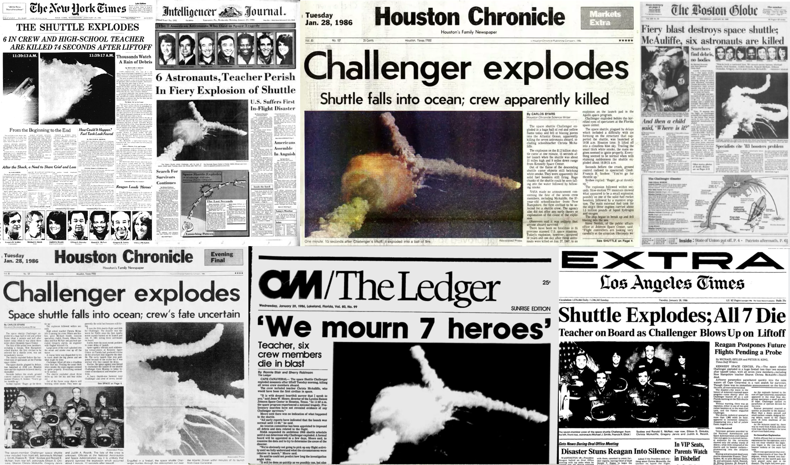
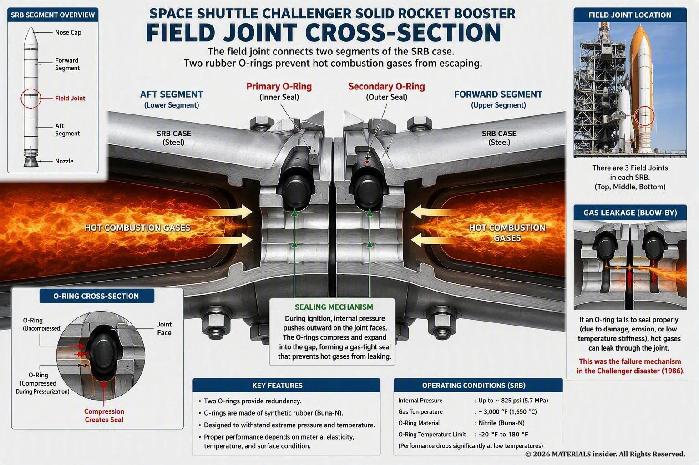
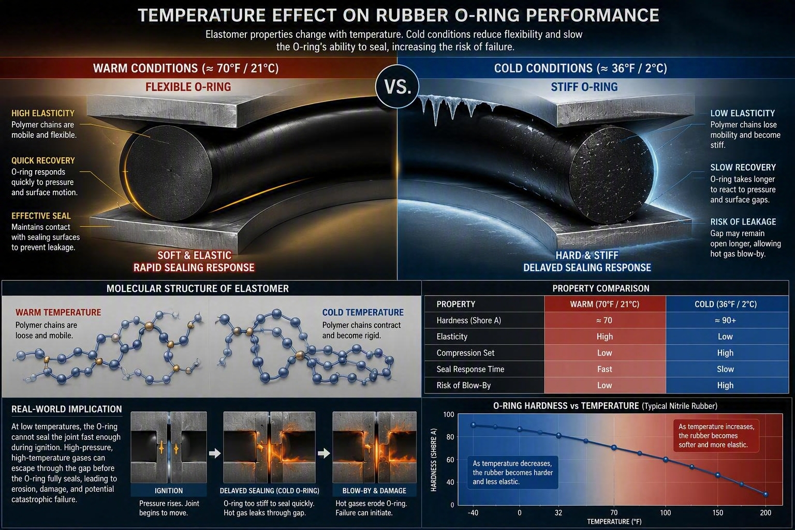
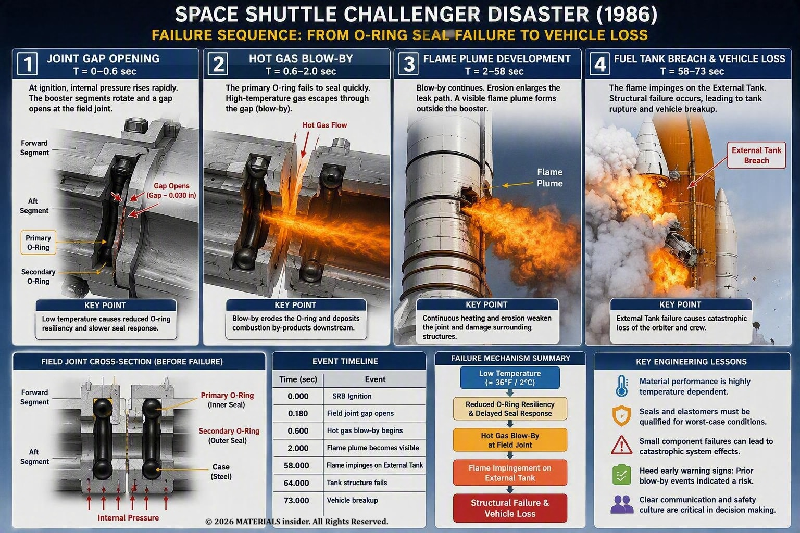
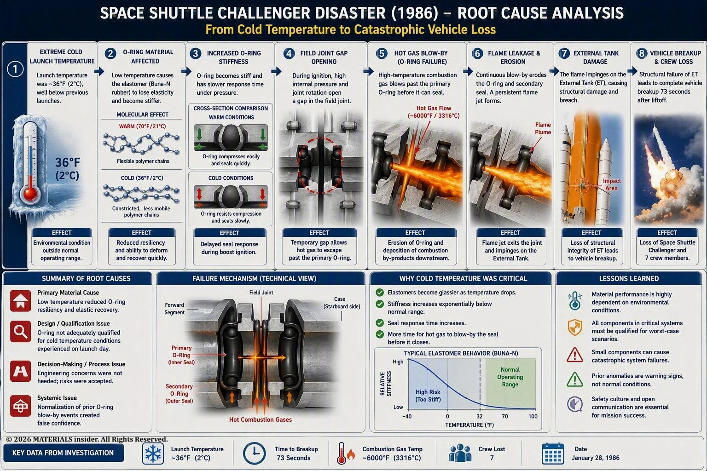

Space Shuttle Challenger Disaster (1986)
The Space Shuttle Challenger disaster was not caused by a rocket engine failure, fuel tank rupture, or software malfunction. The root cause was the loss of sealing performance in rubber O-rings located within the Solid Rocket Booster (SRB) field joints.Extremely cold temperatures reduced the O-rings' elasticity and resilience, preventing them from sealing quickly enough during ignition. This allowed hot combustion gases to escape, initiating a chain of failures that destroyed the shuttle 73 seconds after liftoff.
Why did the Space Shuttle Challenger explode in 1986? Explore the complete failure mode analysis of the O-ring seal failure, cold-temperature elastomer degradation, hot gas blow-by, and the materials science lessons learned from one of history's most significant engineering disasters.

Introduction
On January 28, 1986, the Space Shuttle Challenger lifted off from Kennedy Space Center in Florida carrying seven crew members. Seventy-three seconds later, the shuttle broke apart in one of the most tragic engineering failures in history.
While many people remember the dramatic explosion, engineers remember Challenger for a different reason:
A catastrophic system failure originated from the performance degradation of a small rubber seal.
The disaster remains one of the most important lessons in materials engineering because it demonstrated how environmental conditions can fundamentally alter material behavior and compromise critical safety systems.
Failure Component: The O-Ring Seal!
The Solid Rocket Boosters were assembled from multiple segments joined together using field joints. Each joint contained two synthetic rubber O-rings:
- Primary O-ring
- Secondary O-ring
Their purpose was simple but critical: Prevent hot combustion gases from escaping during rocket operation.
Under normal conditions, the O-rings deform elastically and immediately respond to pressure, creating a gas-tight seal between booster segments.

Failure Mode Analysis (FMA):
This O-rings were made from an elastomer designed to compress and rebound quickly. But the problem was elastomers become stiffer as temperature decreases.
Morning of the launch day temperatures dropped to approximately 36°F (2°C), considerably below temperatures experienced during previous launches. Engineers had previously expressed concerns regarding O-ring performance at low temperatures.
At low temperatures:
- Rubber stiffness increases
- Elastic recovery slows
- Compression set increases
- Resilience decreases
- Seal response time becomes longer
In other words, the O-rings became too stiff to move and seal rapidly enough when ignition pressure was applied. This represents a classic environmental degradation failure.
These are the steps happend at that point:
1. Internal SRB pressure rapidly increased.
2. Joint components flexed slightly under load.
3. A temporary gap opened between booster segments.
4. The primary O-ring failed to seal immediately.
5. Hot combustion gases began passing the seal.
The Rogers Commission later identified delayed O-ring activation caused by low temperature as a primary failure mechanism.

The Blow-By Phenomenon:
A critical piece of evidence came from the phenomenon known as blow-by. Blow-by occurs when hot combustion gases pass beyond the seal before it fully closes. Investigations showed that previous shuttle flights had already experienced O-ring erosion and blow-by events. In other words, warning signs existed long before Challenger launched.
On Challenger:
- Hot gases escaped past the primary O-ring.
- The secondary O-ring failed to provide backup protection.
- A flame path developed through the joint.
At this point, the system still had a chance of survival if the leakage self-sealed. But the cold conditions made the situation far worse. There was no second option.
Failure Progression Timeline:
T = 0 Seconds : Rocket ignition. Cold O-rings fail to respond quickly.
T = 0.6 Seconds : Combustion gases bypass sealing surfaces.
T = Several Seconds : Temporary deposits partially block leakage.
T = 58 Seconds : Increasing aerodynamic loads cause joint movement.
T = 64 Seconds : Flame plume emerges from right SRB.
T = 73 Seconds : Flame breaches the external fuel tank. Structural collapse and vehicle breakup occur.
Investigators concluded that hot gas escaping from the right booster eventually impinged on the external tank, leading to structural failure of the shuttle system.

Root Cause Analysis:
Using a Failure Mode and Effects Analysis (FMEA) approach:
Failure Mode → O-ring sealing failure
Physical Cause → Reduced elastomer resilience
Trigger → Extremely low launch temperature
Immediate Effect → Hot gas blow-by
Secondary Effect → Joint erosion and flame leakage
System Effect → External tank rupture
Final Outcome → Vehicle destruction and crew loss
Theoretically, the O-ring design was sensitive to temperature variation, and its performance could be compromised under cold conditions. The Rogers Commission identified low temperature as a critical contributor to the seal failure.
Why Didn't the Backup O-Ring Work ?
If there was a secondary O-ring, why didn't it prevent the accident ? The gap opening caused by joint rotation occurred so rapidly that both O-rings experienced delayed activation. The secondary seal could not engage quickly enough to stop the escaping gases.
As an vocabulary of a Materials Engineer The system suffered a common-cause failure where both protective barriers were degraded by the same environmental condition.
This is one reason Challenger is frequently studied in reliability engineering and safety-critical design courses.

Materials Science Lessons Learned:
The Challenger disaster fundamentally changed how engineers evaluate material performance.
Lesson 1: Material Properties Are Temperature Dependent
A material that performs well at room temperature may fail under extreme environmental conditions.
Lesson 2: Small Components Can Cause Catastrophic Failures
The failed O-ring measured only a fraction of an inch in diameter, yet it ultimately determined the fate of an entire spacecraft.
Lesson 3: Environmental Testing Must Cover Real Operating Conditions
Components should be validated at actual service temperatures, not just standard laboratory conditions.
Lesson 4: Previous Minor Failures Are Warning Signs
Earlier flights had already shown O-ring erosion and blow-by. The warning signs were visible long before Challenger launched. These events should have been treated as evidence of a developing failure mode rather than isolated anomalies. Nothing happened suddenly. Everything shows signs. But you must have the eyes to see them.
Final Thoughts:
The Challenger disaster remains one of the clearest examples of a materials-related failure in engineering history. The shuttle was not destroyed because the O-rings broke apart. It was destroyed because the O-rings lost the elasticity needed to perform their sealing function under unusually cold conditions.
From a materials science perspective, this distinction matters enormously. The lesson is not simply that "the O-ring failed."
The lesson is that material performance under actual service conditions determines system reliability. A design may appear safe on paper, but if environmental conditions push materials beyond their functional limits, catastrophic failure can occur.
For quality and reliability engineers, Challenger remains a powerful reminder that catastrophic failures often begin with small deviations that have already been observed but not fully understood. The disaster illustrates why material behavior, environmental conditions, and engineering decisions must always be evaluated together rather than in isolation.
References:
- History Channel, What Caused the Challenger Disaster? Low launch temperatures affected O-ring performance and contributed directly to the catastrophe.
- NASA, Failure Scenario 4D. O-ring activation was delayed due to low temperature, and resiliency decreased as temperature was reduced.
- NASA, Report of the Presidential Commission on the Space Shuttle Challenger Accident, Chapter IV: Cause of the Accident. The Commission concluded that failure of the right Solid Rocket Booster field joint and its seals caused the disaster.
- Vaughan, Diane (1996). The Challenger Launch Decision: Risky Technology, Culture, and Deviance at NASA

Self-Healing Materials : The Future of Sustainable & Self Sustainable Materials
A cracked smartphone screen that repairs itself overnight, or a bridge that can automatically fix tiny fractures before they become dangerous. This is not science fiction—these are examples of self-healing materials.
Read Full Article →
Rheopectic Fluids: Time-Dependent Thickening Under Stress
These rare materials gradually increase in viscosity (become thicker) the longer they experience sustained shear stress. Unlike instantaneous shear-thickening (dilatant) behavior, rheopecty requires prolonged agitation: the more you stir or shake (within limits), the more resistant to flow the fluid becomes.
Read Full Article →Share this article: